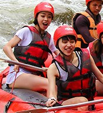

At Riverbend Rafters Rafting Company, our mission is to connect people with the thrill of the river while keeping safety, teamwork, and respect for nature at the heart of every trip. Whether you’re a first-time paddler or a seasoned adventurer, our expert guides will help you make memories that last long after the last rapid.